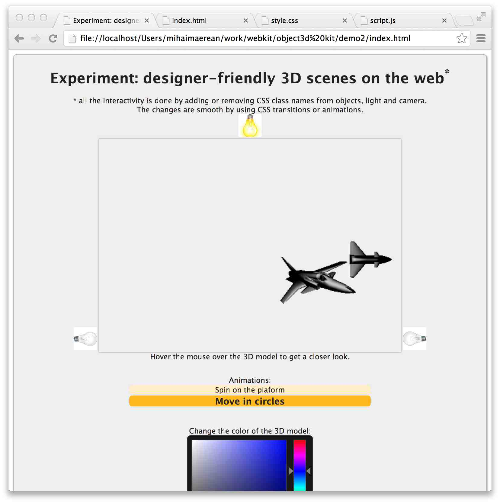

Internships @ Adobe
Mihai Maerean @ Adobe, 2014
Mihai Țică
Flash Player (AIR)
Native StageWebView
Integrat in produs, vezi API
Windows
C++, COM/ActiveX (Internet Explorer), Perforce
Flash Player (AIR)
Native StageWebView
Integrat in produs, vezi API
Windows
C++, COM/ActiveX (Internet Explorer), Perforce
Ce a invatat (propriile lui cuvinte)
- overall, am invatat procesul de dezvoltare al unui feature
- writing effective, nontroll code
- debugging and testing production features
- communicating with eng/pm team
- writing documentation
- si tot ce intra aici, adica la writing code: COM, C++, sa lucrez cu p4 (perforce)
- sa-mi fac codul inteligibil
- test driven development
Andrei Onea
<threeD> tag in HTML
Chromium / Google Chrome
Mac OS
Open source
C++, OpenGL, Chromium Compositor, Git
<threeD> tag in HTML
Chromium / Google Chrome
Mac OS
Open source
C++, OpenGL, Chromium Compositor, Git

Internship 2014 @ Adobe
| Profil | Tehnologii | Titlu | Posturi |
| Backend Dev | Data Entity 6, Web Api 2, SQL Server, REST services. | Api-uri noi pentru platforma Business Catalyst | 2 |
| Frontend Dev | Javascript, Backbone.JS, JQuery si Jasmine. | Imbunatirea SDK-ul javascript al platformei Business Catalyst | 1 |
| Backend Dev | Java, C# | Continuous Integration, Continuous Delivery si UI Automation. teste automate de UI, teste unitare, teste de integrare | 1 |
| Dev | Ruby, JS, HTML | Analytics. Tracking the User Experience trends for DPS mobile apps. | 1 |
| Dev | Possibly: C++/Python | Research new compound file format for smart assets in order to allow for an easier image composition. | 1 |
| Dev | Java | Develop a Java-based infrastructure that facilitates using APIs across different testing frameworks for interrelated web services, each exposing a set of APIs | 1 |
 Silvia Paulet
Silvia Paulet